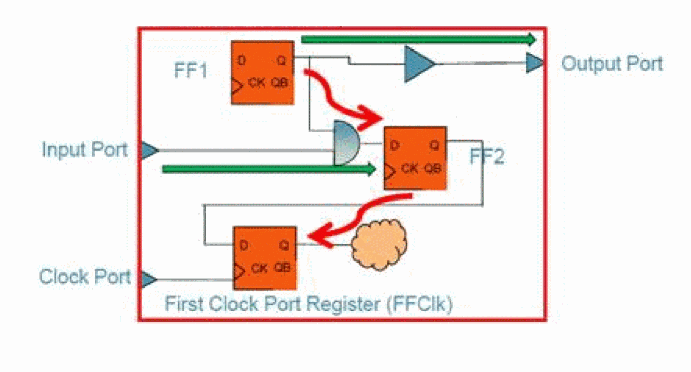

Creating ILMs
In the hierarchical design flow, you load a detailed block-level implementation of a block and its parasitic data, then specify the write_ilm command to create an ILM for the block. This command creates the specified directory containing ILM files.
The software generates ILM data for timing and signal integrity (SI):
- ILM data for timing The model contains the netlist of the circuitry leading from the I/O ports to interface sequential instances (that is, registers or latches), and from interface sequential instances to I/O ports. The clock tree leading to the interface registers is preserved.
-
Internal register-to-register paths, if internal logic is not part of the interface path. However, in special cases some internal paths will be kept, as shown in the following example:
Figure -22 Internal Paths

- Internal paths Internal paths controlled by different clock, or clocks connected to the ILM module through different ports. If the logic between the I/O ports is pure combinational, it is preserved in an ILM.
- ILM data for SI The model includes all of the above, plus attacker drivers or nets which affect I/O paths. It also includes the timing window files in the ILM model directory.
Example ILM Creation
The following command generates the ILM ignoring certain ports and including certain objects in the BlockB directory. It also writes out the ILM SDF file under the BlockB directory.
write_ilm -writeSDF -ignore_ports $ignorePorts -include_object $includeObjects -dir BlockB
Sample Summary Report
The following is a sample summary report generated after running the write_ilm command:
--------------------------------------------------------------
createInterfaceLogic Summary
--------------------------------------------------------------
Model Reduced Instances Reduced Registers
--------------------------------------------------------------
ilm_data
+
setup 4/16 (25%) 0/3 (0%)
hold 4/16 (25%) 0/3 (0%)
setupHold 4/16 (25%) 0/3 (0%)
--------------------------------------------------------------
si_data
setup 3/16 (18%) 0/3 (0%)
hold 3/16 (18%) 0/3 (0%)
setupHold 3/16 (18%) 0/3 (0%)
--------------------------------------------------------------
In this report, the reduction ratio in the ilm_data model is 25 percent which means that 4 out the total 16 instances for this block have been eliminated.
Preserving Selected Instances in ILMs
The write_ilm command can preserve specified instances and/or nets. The -include_object parameter of the write_ilm command accepts a collection of instances and/or nets. All the specified instances and nets are preserved in the generated ILM.
Creating ILMs for Shared Modules
You can use the same sub-block module in different ILM blocks, enabling reuse of versatile modules. The write_ilm command considers constant propagate, so that only the enabled parts of a module are considered when creating ILMs for the reused modules. Because the Tempus database cannot handle the same module name in different circuits, the software automatically modifies the module names with the following rule:
topModuleName+timestamp+$+moduleName
As an example, one ILM block (ModuleA) uses an ALU module (ALU) as an unsigned ALU, and a second block (ModuleB) uses the ALU as a signed ALU. You can change the input signal to use the ALU differently, setting one ALU as sign enabled and the other to off. When you run the write_ilm command, the software considers only the enabled parts of the ALU when creating ILMs for ModuleA and ModuleB. The software also ensures that the name of the ALU module in ModuleA and the name of the ALU module in ModuleB are different.
Creating ILMs Without Using Tempus Database
If you do not have Tempus database for an implemented block but have a Verilog netlist, constraints, and SPEF and TWF for that block, then use the import_ilm_data command to store data in the ILM/XILM format.
The following example shows the import_ilm_data command in case of a MMMC design:
import_ilm_data -si -dir block_A.ILM -cell block_A -mmmc -verilog myfile.v
import_ilm_data -si -dir block_A.ILM -cell block_A -mmmc -incr \
-spef max.spef.gz -rcCorner rcMax
import_ilm_data -si -dir block_A.ILM -cell block_A -mmmc -incr \
-spef typ.spef.gz -rcCorner rcTyp
import_ilm_data -si -dir block_A.ILM -cell block_A -mmmc -incr \
-spef min.spef.gz -rcCorner rcMin
import_ilm_data -si -dir block_A.ILM -cell block_A -mmmc -incr \
-sdc funMaxMax.sdc -viewName funct-devSlow-rcMax
import_ilm_data -si -dir block_A.ILM -cell block_A -mmmc -incr \
-sdc funMaxTyp.sdc -viewName funct-devSlow-rcTyp
import_ilm_data -si -dir block_A.ILM -cell block_A -mmmc -incr \
-sdc tstMaxMax.sdc -viewName test-devSlow-rcMax
import_ilm_data -si -dir block_A.ILM -cell block_A -mmmc -incr \
-sdc funMinMin.sdc -viewName funct-devFast-rcMin
import_ilm_data -si -dir block_A.ILM -cell block_A -mmmc -incr \
-sdc tstMinMin.sdc -viewName test-devFast-rcMin
The following example shows the import_ilm_data command in case of a non-MMMC design:
import_ilm_data -dir test -verilog \ ILM/ilm_setup/ilm_data/\
BlockA_0/BlockA_0_postRoute.v.gz -cell BlockA_0 -spef \ ILM/ilm_setup/ilm_data/BlockA_0\ BlockA_0_postRoute.spef.gz -\ sdc\ILM/ilm_setup/ilm_data/BlockA_0\
BlockA_0_postRoute.core.sdc.gz -si \
-overwrite -xtwf ILM/ilm_setup/si_ilm_data/BlockA_0/BlockA_0_SI.xtwf.gz
Specifying ILM Directories at the Top Level
You can use the specify_ilm command to use the ILM data for a block at the top partition level rather than using the default dotlib model. You can run specify_ilm multiple times in the same session. Each time you run this command, the software overwrites the previous setting for a block. If master/clones exist in a design, the cell name will have the name of the master partition.
You can use the unspecify_ilm command to revert to using the dotlib model for a block.
specify_ilm (or unspecify_ilm) command before specifying read_ilm. This is because the ILM settings cannot be changed after using read_ilm.Example Top-Level Signoff Flow with ILMs
- Before starting the Tempus tool, prepare the top-level Verilog file, if needed. You need the following in the top-level directory:
- Start a Tempus session from the top-level module directory within the directory where the partitions are saved.
-
Load the config file, including the top-level netlist, libraries, top-level constraint file, and ILM directory name.
specify_ilm -cell block_A -dir ../block_A/block_A.ILM specify_ilm -cell block_B -dir ../block_B/block_B.ILM read_design filename
- Run read_spef to load the top-level Standard Parasitic Extraction File (SPEF).
-
Run the
read_ilmcommand. - Run the report_timing command to perform timing analysis.
ILMs Supported in MMMC Analysis
Cadence strongly recommends that you use ILMs in the MMMC mode. If you have a non-MMMC design, create and load a view definition file that contains the following:
set_analysis_view -setup {mode1_slowCorner} -hold {mode1_fastCorner}
The MMMC analysis for designs including ILMs is identical to MMMC analysis for black box designs except for the following considerations:
- Views, modes, and corners at the top and partition levels must have same names.
-
When you use create_constraint_mode or update_constraint_mode to specify constraints for MMMC, you must specify the ILM constraints using the
-ilm_sdc_filesparameter (that is, timing in the presence of ILMs get constraints from the-ilm_sdc_filesparameter, not the-sdc_filesparameter). The SDC files specified with the-ilm_sdc_filesparameter should be the constraint file of the full-chip flat netlist, where it allows referencing nets or pins internal to the ILM model.
true to suppress all error and warning messages related to the not found objects. Note that this command might also suppress error messages that might be of use (that is, where the top-level pins or nets or instances cannot be found).Return to top